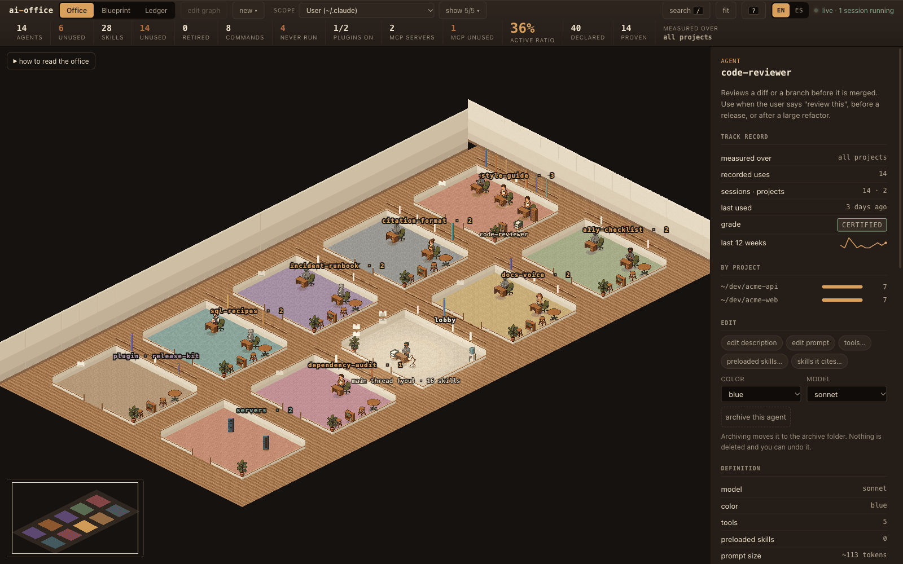
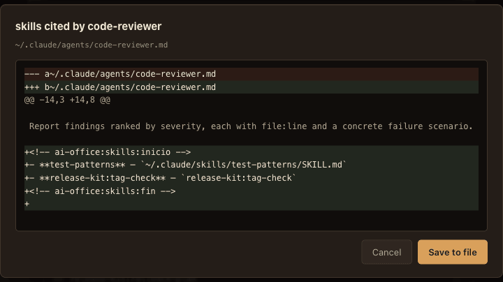
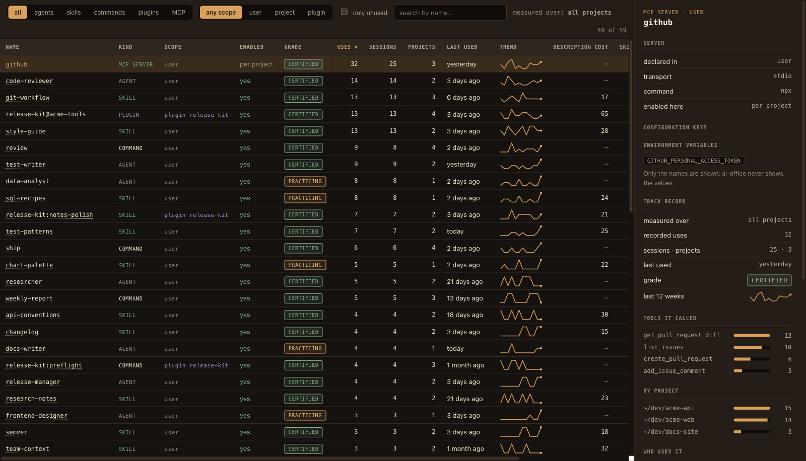

See, edit and measure your Claude Code setup
ai-office turns everything your Claude Code runs on into a pixel-art office, a live graph and a ledger. See how it fits together, change it without fear, and find out what actually does the work.
- Agents
- Skills
- Slash commands
- Plugins
- MCP servers
Free and open source (MIT). Runs on your machine from ~/.claude; nothing leaves it.

What ai-office does
See
Every agent, skill, slash command, plugin and MCP server, laid out as an office and as a graph of who uses what. Each link quotes the file and line it comes from, and any file opens right there.
Edit
Rewrite a prompt, a SKILL.md or a command, wire skills to agents, change models and tools, create new ones, and switch plugins and MCP servers on or off. Every write shows the diff first.
Measure
A ledger of everything: uses, sessions, a 12-week trend, grade, usage by project and by MCP tool, and what idle skills cost in context. Over all your sessions, or just one project.
See your setup as it really is
Nothing here is a hand-drawn diagram: every room, shelf, rack and line comes from something written in your files or recorded in your transcripts.

The Office
A floor plan in isometric pixel art. Rooms are not invented themes: they come from which skills each agent cites and which commands call it, so every door carries the name of a real skill or command. Plugins get their own room, and MCP servers a rack each in the server room.
Position is data. A grey figure has never been delegated, a book spine's height is how established a skill is, a dark rack is a server nobody calls. Click anything and the side panel tells you what it is, what it has done and which file says so.

The Blueprint
The graph of who uses what: agents, skills, commands, plugin pieces (ringed) and MCP servers (hexagons). Dotted is what your prompts declare; solid is what your transcripts prove.
Press / to find anything, 1 2 3 to switch views and ? for the legend.
Edit it without fear
Everything you change goes through the same door: the diff is shown before the disk is touched, a backup is kept, and a line lands in an audit log. Nothing is ever deleted.

- Agents
- Description, prompt, model, colour, tools, preloaded skills and the skills it cites. Archive and restore. Create new ones.
- Skills
- Description (next to the words of it you never type), the SKILL.md itself, which agents it is assigned to. Retire it, or create a new one.
- Slash commands
- Description, argument hint and body, or compose it on a flow canvas: who takes part, in what order, steps in parallel. Create new ones.
- Plugins and MCP servers
- Switch them on or off in the settings file you choose (MCP servers per project, as Claude Code keeps them). Plugin files are never touched.
Measure what actually works
Your prompts say who should do what. Your transcripts say who did. ai-office crosses both in seconds, even over gigabytes of sessions, and every number cites its source.

$ npx ai-office census
agents 14 6 have not worked in the last 90 days
skills 28 14 unused in the last 90 days
custom commands 8 4 run at least once
plugins 1 enabled of 2 installed · ~65 tokens
MCP servers 2 loaded · never called: postgres
active ratio 36%
agent→skill cited in their prompt 40 declared
agent→skill proven 14 in the history- 6 of 14 agents did nothing in 90 days. You wrote their prompts. No session in the last 90 days delegated anything to them.
- Half the skills, idle. Their descriptions still load into every session and cost tokens.
- An MCP server nobody calls. Configured, loaded, and never used once. Switch it off in the projects that don't need it.
- 40 promises, 14 proofs. Agents cite skills in their prompts. Transcripts show which citations turned into calls. That gap is the product.
Numbers from the demo installation that ships with the project. Run npx ai-office demo to explore it yourself.
The graph is already written, in prose
Agents tell themselves to “read the style-guide skill first”. Commands name the agents they call. None of that is a structured field, so no tool sees it. ai-office extracts it, with the file and line that justify each link, and lays it over what your transcripts prove.
- Available
- installed skills Anyone can invoke it, if the model decides to.
- Assigned
- prose in the agent's prompt Its prompt says so. Nobody guarantees it.
- Preloaded
-
skills:in the frontmatter Always loaded, whatever it costs. - Proven
- your transcripts It did it, N times, the last one on a given day. This layer wins: it is the only one backed by facts.
Watch your agents clock in
With the hooks installed, the office comes alive while you work in another window: agents materialise when they are delegated and a skill's spine lights up when it is invoked. Every event leaves a permanent mark on the records.
Your whole setup, or just one project
Configurable, so it shows what you need and never gets crowded.
Pick the scope
User level, or one project: what a session there really loads, with project pieces that shadow user ones marked as such. Usage is then measured over that project's sessions only.
Choose what to draw
Toggle agents, skills, commands, plugins and MCP servers in the Office and the Blueprint. The Ledger always lists everything, with its own filters.
English or Spanish
Interface and CLI in both. Switch with the EN/ES button, --lang es, or the plugin's language option.
Principles
Nothing leaves your machine
No server, no telemetry, no account, no network. A local daemon listens on 127.0.0.1 only, behind a token that changes on every start. MCP secrets are never shown: only the names of their variables.
Every number cites its source
If a figure cannot say which file and field it comes from, it is not shown. That's why there is no token cost for MCP servers: it can't be known without connecting to them.
No number improves by spending more
A grade saturates: the 50th use is worth no more than the 3rd, and it expires after 90 days without use.
Install
Requires Node 22.18 or newer. Nothing is written to your configuration without showing you the diff first.
In one command
Nothing to install globally. Run it inside a project to open that project's scope.
npx ai-office # the office
npx ai-office census # the numbers
npx ai-office demo # a fictional office, safe to editAs a Claude Code plugin
For live activity. The hooks are declared by the plugin, so your settings.json is never touched. Adds the /census command.
claude plugin marketplace add alex-roc/ai-office
claude plugin install ai-office@ai-office